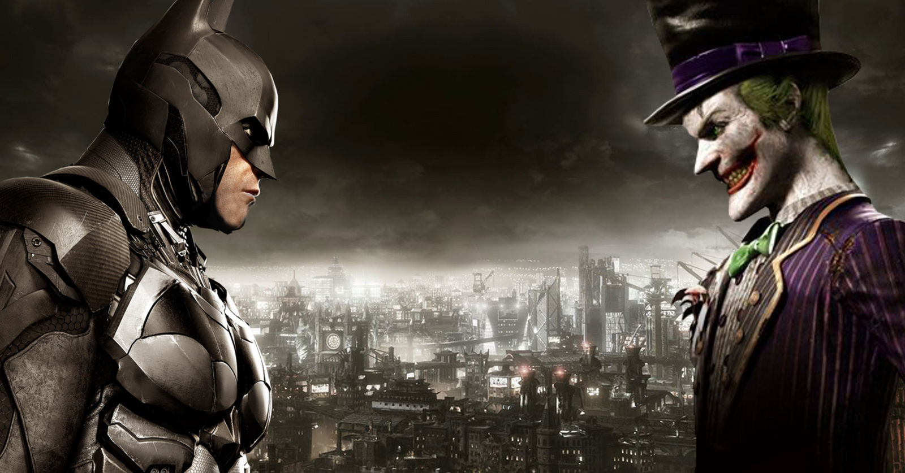

This Is A Debate Between The BAT and The JOKER

Brief History Between Batman And The Joker:
The Batman-Joker rivalry
Born in the 1940s, has evolved over the decades into one of the most iconic conflicts in comic book history. Initially marked by the Joker's sadistic violence and Batman's unwavering pursuit of justice, their dynamic shifted through different eras, from the campy 1960s to the psychologically complex '80s. "The Killing Joke" graphic novel solidified the Joker's backstory and obsession with Batman. In the modern era, their rivalry has grown even more intense, exploring themes of chaos, sanity, and the nature of heroism. Adaptations in various media have further cemented their legendary conflict, making it an enduring cornerstone of Batman's character and Gotham City's mythology.